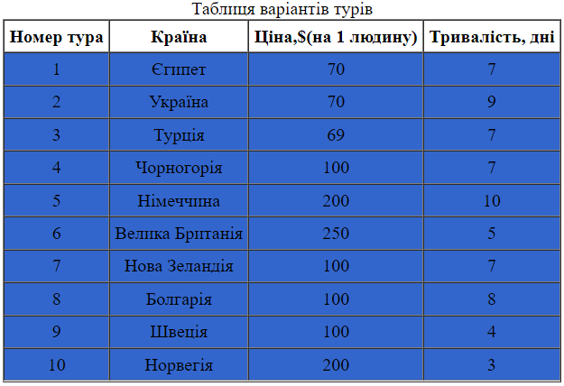

Селектор знаходиться на початку CSS-правила, до фігурних дужок, і визначає до яких HTML-елементів застосуються властивості і значення з правила. Найпростіші (і найпопулярніші) селектори - це селектори за тегами і по класах. Селектори за тегами містять ім'я тега без символів <і> і застосовуються до всіх відповідних тегів. Селектори по класах починаються з точки, за якою йде ім'я класу, і застосовуються до всіх тегам з відповідним атрибутом class.
Селектори класу:

.main {
display: flex;
max-width: 100%;
}
.block{
display: flex;
width: 50%;
flex-wrap: wrap;
}
.section {
display: flex;
flex-direction: column;
flex-basis: 50%;
}
Селектори тегу:
td {
background-color: #3366CC;
}